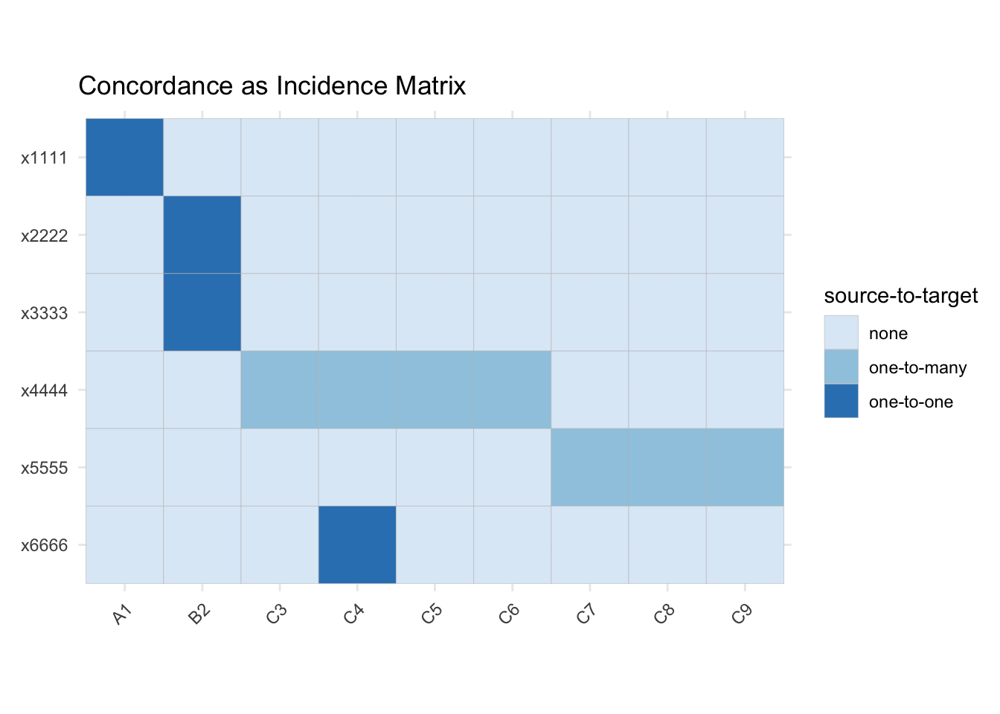
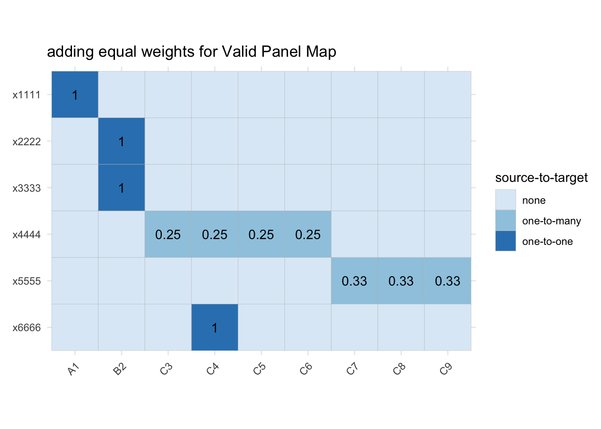

3 Toy Objects
3.1 Ideal Case
IDEAL CASE
- code_dict: cover all mapping types
- data_in: include case variable (country)
- group_in: data_in grouped by case
- multiple values
3.2 Basic Panel Map
In the most simple case, to make a panel map, we need only a correspondence between a source nomenclature (std_A) and target nomenclature (std_B), which doesn’t have any duplicate rows.
set.seed(1832)
## correspondence/concordance table
codes_BA <- dplyr::tribble(~ std_B, ~ std_A,
"A1", "x1111", # one-to-one
"B2", "x2222", # many-to-one
"B2", "x3333",
"C3", "x4444", # one-to-many (4)
"C4", "x4444",
"C4", "x6666", # many-to-many
"C5", "x4444",
"C6", "x4444",
"C7", "x5555", # one-to-many (3)
"C8", "x5555",
"C9", "x5555"
)
## panel_map
weights_BA <- codes_BA |>
dplyr::distinct(std_B, std_A) |>
dplyr::group_by(std_A) |>
dplyr::mutate(n_dest = dplyr::n(),
weight = 1 / n_dest) |>
dplyr::ungroup()
pm_BA <- weights_BA |>
dplyr::select(std_B, std_A, weight)Write this data into the package for testing purposes
equal_pm <- list("codes_BA" = codes_BA,
"weights_BA" = weights_BA,
"pm_BA" = pm_BA)
usethis::use_data(equal_pm, internal = TRUE, overwrite = TRUE)## ✔ Adding 'R' to Depends field in DESCRIPTION
## ✔ Saving 'equal_pm' to 'R/sysdata.rda'We can visualise a panel map as the addition of weights to the concordance:
library(ggplot2)
inc_mtx_long <- tidyr::expand(codes_BA, std_A, std_B) |>
dplyr::left_join(pm_BA, by = c("std_A", "std_B")) |>
dplyr::transmute(to = std_B, from = std_A, weight = weight)
gg_inc_mtx <- inc_mtx_long |>
dplyr::mutate(src_case = dplyr::case_when(weight==1 ~ "one-to-one",
is.na(weight) ~ "none",
weight < 1 ~ "one-to-many")) |>
ggplot(aes(x=to, y=from)) +
geom_tile(aes(fill=src_case), col="grey") +
scale_y_discrete(limits=rev) +
scale_fill_brewer() +
coord_fixed() +
labs(x = element_blank(), y = element_blank(), fill="source-to-target") +
theme_minimal() +
theme(axis.text.x = element_text(angle = 45, hjust = 1)) +
ggtitle("Concordance as Incidence Matrix")
gg_pm_mtx <- gg_inc_mtx +
geom_text(data = dplyr::filter(inc_mtx_long, !is.na(weight)), aes(label=round(weight, 2))) +
ggtitle("adding equal weights for Valid Panel Map")

3.3 Valid Panel Maps
3.3.1 Single Source Variable
In the most simple case, we have one source variable which we are trying to apply the concordance to.
#' Helper to build equal split panel map
#'
#' Generate panel map using all *distinct* correspondences between two classifications.
#'
#' @param code_dict Data frame containing correspondence between source and destination codes
#' @param code_in Variable in `code_dict` containing source codes to convert from.
#' @param code_out Variable in `code_dict` containing destination codes to convert to.
#' @param .weights_to (optional) new column name for storing weights that will be applied to
#' input values.
#'
#' @return Returns panel map
#' @export
#'
#' @examples
make_pm_equal <- function(code_dict, code_in, code_out, .weights_to = NULL){
## check for duplicates
if (any(duplicated(code_dict))) {
message("Removing duplicate code_in/code_out rows")
code_dict <- code_dict %>%
dplyr::distinct({{code_in}}, {{code_out}})
} else {
}
## code names as strings
## make column name for weights
.weights_to <- .weights_to %||% paste("split", deparse(substitute(code_in)), sep = "_")
panel_map <- code_dict |>
dplyr::group_by({{code_in}}) |>
dplyr::mutate("n_dest" = dplyr::n(), ## no need for n_distinct after duplicates removed
!!.weights_to := 1 / n_dest) |>
dplyr::ungroup() |>
dplyr::select(-n_dest)
return(panel_map)
}3.4 generate code_dict with weights
eps <- 0.001 # small “dust” to mess up weights
weights_BA <- codes_BA %>% dplyr::group_by(std_A) %>% dplyr::mutate(n_dest = dplyr::n_distinct(std_B), weight = 1 / n_dest) %>% dplyr::ungroup() %>% # add bad weights dplyr::mutate(weight_more = dplyr::case_when(weight == 1 ~ weight, TRUE ~ weight + eps), weight_less = dplyr::case_when(n_dest == 3 ~ 0.33, n_dest == 4 ~ 0.2, TRUE ~ weight) )
3.7 final data // collapse destination codes with multiple transfers
data_AB_out <- data_map_BA %>% dplyr::group_by(country) %>% dplyr::mutate(across(starts_with(“A_”), ~ .x * weight)) %>% dplyr::group_by(std_B, .add = TRUE) %>% dplyr::summarise(dplyr::across(starts_with(“A_”), ~ sum(.x), .names = “{.col}_out”), .groups = “drop_last”)
toy_AB <- list(“data_in” = data_in, “codes_BA” = codes_BA, “weights_BA” = weights_BA, “pm_BA” = panel_map, “data_map” = data_map_BA, “data_out” = data_AB_out)
## Breaking Cases
BREAKING CASES for tests
[x] data_in: include BAD non-numeric value column
[x] code_dict: include BAD weights -- sum > 1
[x] code_dict: include BAD weights -- sum < 1?
[>] code_dict: remove mapping for one origin code in TEST
[>] code_dict: include duplicate mapping in TEST
Let's define a function for our R package:
```r
testthat::test_that(
"make_pm_equal() works",
{
testthat::expect_identical(
make_pm_equal(equal_pm$codes_BA, std_A, std_B, .weights_to = "weight"),
equal_pm$pm_BA)
}
)
Code chunks whose first line starts with #' are added to the package.
We can try running it.
## source data
code_in <- dplyr::distinct(codes_BA, std_A)
data_in <- code_in |>
dplyr::mutate(A_100 = 100)## [1] "Hello Jacob!"That code chunk does not start with #', so it is not added to the package.
Let’s write some tests to make sure the function behaves as desired:
#' Say hello to someone
#'
#' @param name Name of a person
#' @param exclamation Whether to include an exclamation mark
#' @export
say_hello <- function(name, exclamation = TRUE) {
paste0("Hello ", name, ifelse(exclamation, "!", "."))
}## Test passed 🌈Code chunks that have one or more lines starting with test_that( (or testthat::test_that() are added to the package as tests.